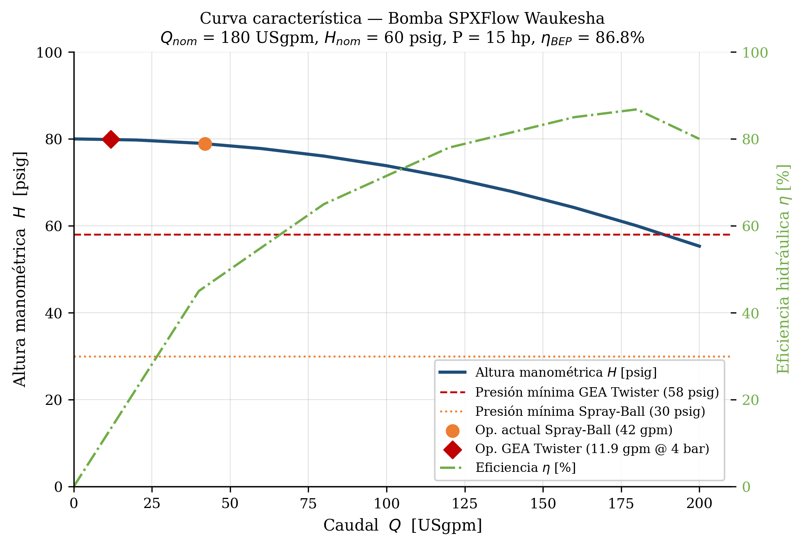
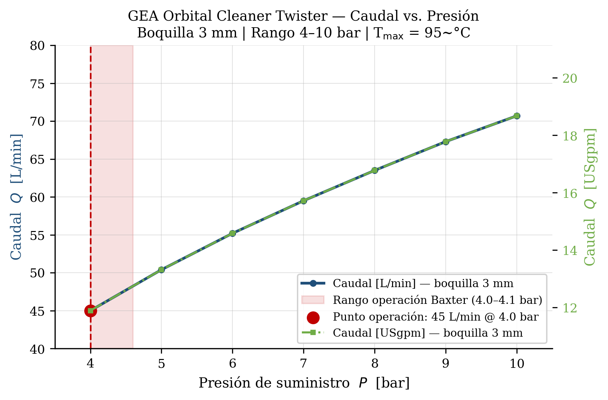
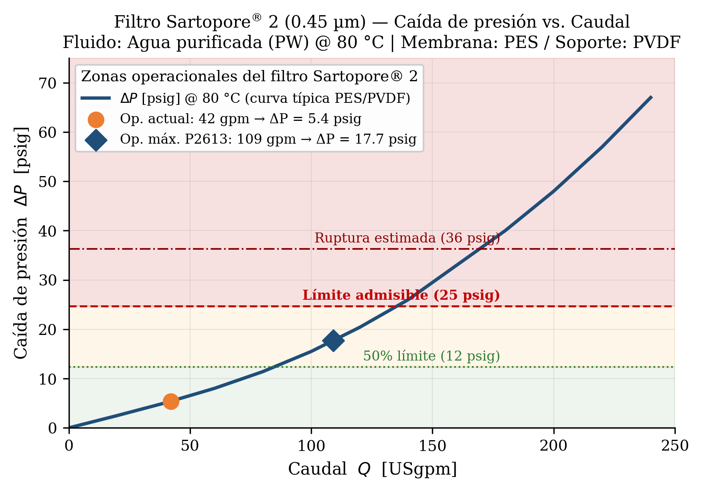
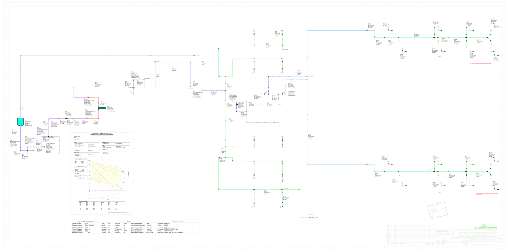

Escenario
Descripcion
Estudio hidraulico y termico del sistema de sanitizacion WFI de Laboratorios Baxter S.A. ante el reemplazo de Spray-Ball estaticos por limpiadores orbitales GEA Orbital Cleaner Twister.
Sintesis de los resultados del estudio hidraulico y termico bajo 16 escenarios operacionales y la propuesta de mejora (Escenario 17).
Solo 2 de los 16 escenarios operacionales iniciales cumplen con la presion minima de 58 psig (4.0 bar) exigida por el GEA Twister. Margen critico: tan solo 0.97 psig.
La bomba Waukesha C216 opera a maxima capacidad (60 Hz, 3600 rpm) sin margen adicional. Es insuficiente para todos los escenarios combinados (6-16). El cuello de botella es exclusivamente la bomba.
Todos los escenarios mantienen temperatura final >= 80 C. El intercambiador de calor Teringo BEM (1.46 MW) no representa limitacion termica en ninguna condicion evaluada.
La bomba Waukesha C218-2x1.5x8 (30 hp) con valvula de control al 35% provee 66.50 psig en el punto de uso, superando el umbral con margen operacional de 8.5 psig.
| Parametro | Spray-Ball estatico | GEA Orbital Twister | Variacion |
|---|
Simulaciones dinamicas ejecutadas en Pipe-Flo Professional v19.1. Filtre por estado para identificar rapidamente las condiciones operacionales criticas.
Total
Cumplen
Cumple*
No cumplen
Propuesta
Especificaciones tecnicas de los equipos criticos evaluados en el estudio. Materiales conforme ASME BPE 2024.
Curvas de equipos, perfiles hidraulicos y balance termico del loop WFI.

Caudal vs. presion de descarga para la bomba actual instalada.

Rango operacional: 11.9-18.8 USgpm @ 58-145 psig.

Sartopore 2: DP max 1.7 bar. DP real max: 0.039 bar.

P2613-PR-PL-001 REV0 | PFD completo en PDF y DWG
PDF / DWG bajo solicitudPaquete completo de entregables del proyecto. Transmittal P2613-PR-TR-001 REV0 emitido el 29/04/2026 para aprobacion y comentarios.
Paquete de entregables completo
Todos los documentos listados en el transmittal TR-001 REV0 se encuentran disponibles para descarga, incluyendo el P2613-PR-PL-001 "PFD Diagrama Hidraulica Propuesta" en formatos PDF y DWG.
| Item | ID Documento | Descripcion | Rev. | Pag. | Descargar |
|---|
Siete conclusiones derivadas del analisis integral hidraulico y termico del loop WFI bajo las nuevas condiciones operacionales.
Iniciar proceso de Change Control bajo 21 CFR 211.68 para la modificacion de infraestructura critica (bomba C218 + VDC).
Preparar protocolos de calificacion IQ/OQ para la nueva bomba C218 y valvula de control, verificando materiales ASME BPE SF-1.
Verificar que todos los dead legs cumplan <= 3D segun ASME BPE SD-3 antes de aprobacion para construccion.